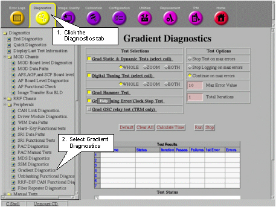
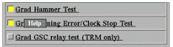

- 00000018WIA30043E20GYZ
- id_131075473.0
- Aug 29, 2019 1:38:45 AM
Gradient Driver Tests
Application
Gradient Driver Diagnostics are a method of testing the Gradient Driver subsystem. The tests, which are a hybrid set of digital and analog diagnostic tests, are invoked on the screen at the operator workspace. This group of tests and the three non-proprietary Power-up Tests exercise and test the entire Gradient Driver subsystem.
The Gradient Driver Tests are available on systems with Advanced Concept Gradient Driver (ACGD) Cabinets that use the GP (Gradient Processor) to look at digital and analog signals within the Gradient Driver subsystem.
The Gradient Driver Tests are designed to isolate a problem to a Field Replaceable Unit (FRU), or group of FRUs. The tests are easy to invoke. Errors are reported to the system error log. The system error log entries are limited in size, so, in cases where additional information is required, an “extended error” may be available. System error messages with extended information will contain the symbol “->” at the end of the message.
Accessing the Tool
A valid Service Key is required to run these Proprietary Class C Diagnostics. A Service Key is required for Gradient Tests (Static and Dynamic Tests).
-
Go to the Service Desktop. The Service Browser should already be running. If it is not, click Service Browser on the Service Desktop Manager. See Figure 1.
-
Follow the instructions on Figure 2 to start the Gradient Diagnostics tool.
-
In the Gradient Diagnostics menu (Figure 2), click the Run button. Once started, the selected diagnostic test will automatically commence. To halt the test, click on Stop.
The results of the diagnostics are shown in the Test Results table.


Using On-Line Help
Help is available on-line for any hyperlinked text in the Service Browser. A hyperlink appears bolded and underlined in any color. The example below appears in Gradient Diagnostics.

Whenever you move the pointer over a hyperlink, the pointer changes to a tiny red hand followed by .
Left-click on the hyperlink and a pop-up window will appear with information on the topic or menu option you selected. Information about the test will be displayed as text, drawings, charts or a combination of all three. There may be additional hyperlinks on the Help screen. See Figure 4 for an example of a Help screen for the Grad Hammer Test.

Note that there are additional hyperlinks containing related information at the bottom of the Help screen in Figure 4. Left-click any of these links to view their contents.
If all of the text or graphics in a Help screen are not visible, increase the size of the window or use the scroll bar on the right of the window to move up and down.
To close a Help window, click the Close button at the bottom of the window.
Gradient Driver Test Descriptions
Table 1gives link to descriptions of each test available.
| Power-Up Tests | MDS Link Dependency |
| GPS Static and Dynamic Test | Digital Tuning Tests |
| Gradient Hammer Test | Gradient Framing Error/Clock Stop Test |
| Grad GSC Relay Test | Fault Registers |